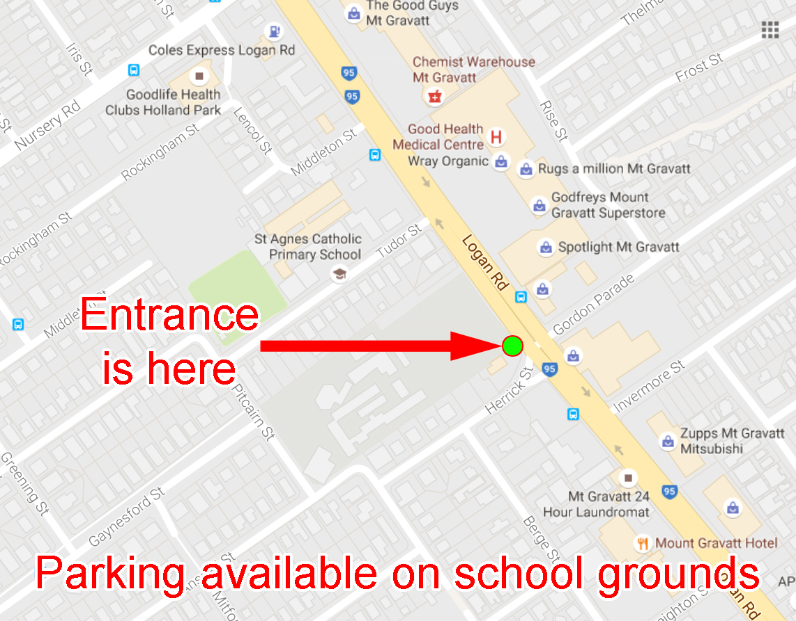

rehearses at
MOUNT GRAVATT STATE SCHOOL,
1263 Logan Road Mount Gravatt Q4122
(Sorry no wheelchair access available at this site)

Entrance is on Logan Road near the corner of Herrick Street, opposite Zupps Subaru car sales.
The practise room is located near the front of
the school close to the Principles and other carpark spaces.
|